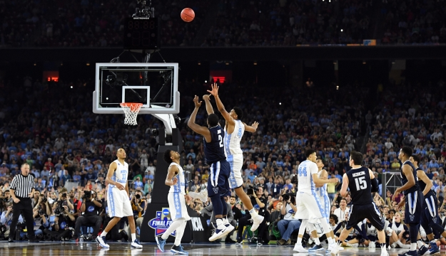
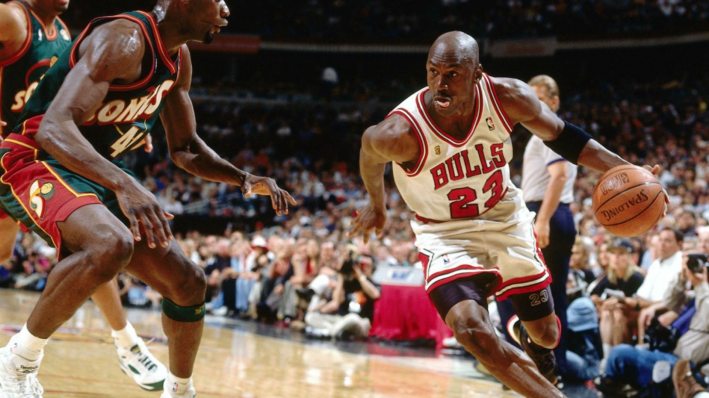

Početak košarkaške igre datira prije nešto više od 100 godina (1891.) i vezan je za SPRINGFIELD, MASSACHUSETTS, USA. U to vrijeme Dr.JAMES NAISMITH (rođen 06.11.1861. – umro 28.11.1939.) radio je kao profesor tjelesnog odgoja u tadašnjoj školi CHRISTIAN WORKERS (danas SPRINGFIELD COLLEGE).Kao trener fudbalskog tima, nastojao je da izmisli neku zanimljivu igru u zatvorenom prostoru za studente tokom zimskog perioda.Za dvije sedmice osmislio je osnovna pravila nove igre.